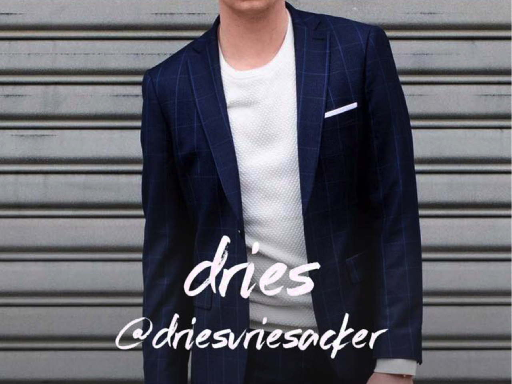

DRIES? ééN VAN DE DRIE GEZICHTEN ACHTER ENFNTS TERRIBLES
Vanwaar komt je passie voor bloggen/media?Het is vroeger begonnen met mijn passie voor mode. Ik begon modebloggers te volgen, zoals Sofie Valkiers, en ik keek heel hard op naar wat ze deden. Het leek me super cool om iets te doen en dat te kunn...
PETER LANCEERDE DE POPULAIRE APP CHESTNOTE
Dag Peter, kan je eens uitleggen wat Chestnote juist is?Chestnote is een applicatie die je kan downloaden op je gsm. Via deze applicatie kan je een soort van berichten sturen naar vrienden, kennissen of zelfs vreemden. De bedoeling is dat je een ...

SEFORA BRENGT HAAR EERSTE GEDICHTENBUNDEL ZELF UIT!
Hoe is je schrijfcarrière begonnen?Ik ben initieel beginnen schrijven omdat ik een heel verlegen kind was. In plaats van dingen te zeggen schreef ik ze op. Toen ik zes jaar was schreef ik mijn eerste "boek". Eigenlijk was het ...